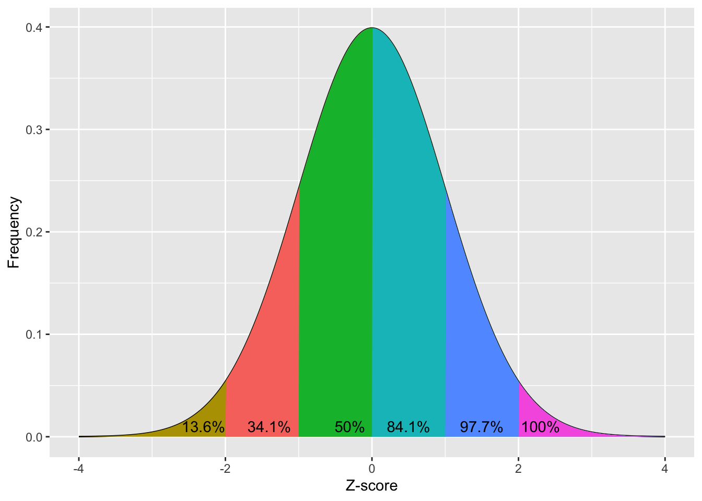

library(ggplot2)
# https://stackoverflow.com/a/12429538
norm_x<-seq(-4,4,0.01)
norm_y<-dnorm(-4,4,0.0)/2
norm_data_frame<-data.frame(x=norm_x,y=dnorm(norm_x,0,1))
shade_2.3 <- rbind(
c(-8,0),
subset(norm_data_frame, x > -8),
c(norm_data_frame[nrow(norm_data_frame), "X"], 0))
shade_13.6 <- rbind(
c(-2,0),
subset(norm_data_frame, x > -2),
c(norm_data_frame[nrow(norm_data_frame), "X"], 0))
shade_34.1 <- rbind(
c(-1,0),
subset(norm_data_frame, x > -1),
c(norm_data_frame[nrow(norm_data_frame), "X"], 0))
shade_50 <- rbind(
c(0,0),
subset(norm_data_frame, x > 0),
c(norm_data_frame[nrow(norm_data_frame), "X"], 0))
shade_84.1 <- rbind(
c(1,0),
subset(norm_data_frame, x > 1),
c(norm_data_frame[nrow(norm_data_frame), "X"], 0))
shade_97.7 <- rbind(
c(2,0),
subset(norm_data_frame, x > 2),
c(norm_data_frame[nrow(norm_data_frame), "X"], 0))
p<-qplot(
x=norm_data_frame$x,
y=norm_data_frame$y,
geom="line"
)
p +
geom_polygon(
data = shade_2.3,
aes(
x,
y,
fill="2.3"
)
) +
geom_polygon(
data = shade_13.6,
aes(
x,
y,
fill="13.6"
)
) +
geom_polygon(
data = shade_34.1,
aes(
x,
y,
fill="34.1"
)
) +
geom_polygon(
data = shade_50,
aes(
x,
y,
fill="50"
)
) +
geom_polygon(
data = shade_84.1,
aes(
x,
y,
fill="84.1"
)
) +
geom_polygon(
data = shade_97.7,
aes(
x,
y,
fill="97.7"
)
) +
xlim(c(-4,4)) +
annotate("text", x=-2.3, y=0.01, label= "13.6%") +
annotate("text", x=-1.4, y=0.01, label= "34.1%") +
annotate("text", x=-0.3, y=0.01, label= "50%") +
annotate("text", x=0.5, y=0.01, label= "84.1%") +
annotate("text", x=1.5, y=0.01, label= "97.7%") +
annotate("text", x=2.3, y=0.01, label= "100%") +
xlab("Z-score") +
ylab("Frequency") +
theme(legend.position="none")